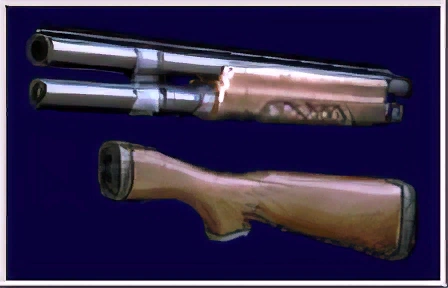

Descripcion
La Remington M1100-P es la escopeta que Leon usa en Resident Evil 2. Esta se puede mejorar al combinar el arma con las piezas de escopeta y así obtener la Remington M1100 mejorada.
Es un arma muy fuerte y útil contra zombis y los licker. Puede llevar 5 cartuchos cargados. El retroceso del arma es suficiente para desorientar a Leon cuando se encuentra mejorada, sin embargo, como Chris es más fuerte, es capaz de controlarla más rápido y reorientarse. También es usada por Leon en el modo de juego Extreme Battle.
Si se le acopla las piezas de escopeta, su poder se intensifica drásticamente, adquiriendo una culata además, 2 cartuchos extras y con mayor retroceso.
